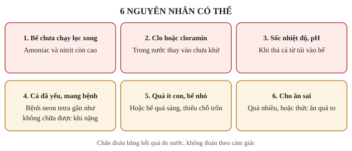

Vì sao cá neon chết hàng loạt sau 1 tuần
Tác giả: Ruler
Cá neon chết hàng loạt sau một tuần là câu chuyện quen thuộc nhất của người mới nuôi cá cảnh. Đàn cá mua về bơi rất đẹp trong hai ba ngày đầu, rồi bắt đầu lờ đờ, tách đàn, mất màu, nằm ở mặt nước hoặc ở đáy, và chết từng con một cho tới khi gần hết đàn. Người nuôi thường nghĩ cá bị bệnh lạ, hoặc cửa hàng bán cá yếu. Đôi khi đúng là cá yếu, nhưng trong nhiều trường hợp, nguyên nhân nằm ở nước trong bể của chính người nuôi.
Bài này không chẩn đoán bệnh cho một con cá cụ thể và không kê thuốc. Bài liệt kê các nguyên nhân có thể, cách phân biệt chúng bằng dấu hiệu và bằng kết quả đo nước, và bước xử lý đầu tiên cho từng trường hợp. Nếu cá vẫn chết sau khi nước đã về mức an toàn, bạn cần hỏi bác sĩ thú y chuyên về cá hoặc cửa hàng thủy sinh có kinh nghiệm, vì tổn thương do nước xấu có thể làm cá phát bệnh nhiều tuần sau đó.
Hiểu đúng về cá neon trước khi tìm nguyên nhân
Cá neon, tên khoa học Paracheirodon innesi, là cá nhỏ sống ở suối rừng Amazon, ở Colombia, Brazil và Peru. Seriously Fish mô tả cá neon sống ở suối rừng có nước chua, độ cứng cacbonat không đáng kể và nước nhuốm màu nâu do chất mùn từ lá cây phân hủy. Cá neon trưởng thành dài khoảng 30 mm tính tới gốc đuôi, cần mặt bể 60×30 cm (khoảng 54 lít), nhiệt độ 21–25°C, pH 4,0–7,5, độ cứng 1–12 dGH, và nên nuôi từ 8 tới 10 con trở lên.
Hai điểm trong hồ sơ này rất quan trọng cho bài này. Thứ nhất, cá neon là cá bơi theo đàn, cần đàn đủ lớn để cảm thấy an toàn. Nuôi ít con, cá sẽ stress và nhạt màu. Thứ hai, Seriously Fish viết rõ nhiều năm nhân giống thương mại đã làm suy yếu dòng cá neon cảnh, dị tật và sức khỏe kém đã trở nên phổ biến, vì vậy cần chọn cá cẩn thận. Nói cách khác, cá neon không phải là loài "thả vào đâu cũng sống". Chúng dễ nuôi khi bể đã ổn định, nhưng rất nhạy cảm khi bể mới, nước chưa ổn định hoặc cá mua về đã yếu sẵn.
Bài này dùng đúng các con số trên cho cá neon trong toàn bộ website. 10 loại cá cảnh dễ nuôi nhất cho người mới cũng dùng các con số này. Nếu bạn thấy một nguồn khác ghi nhiệt độ 20–26°C và pH 5,5–7,0 cho cá neon ở Việt Nam, đó là khoảng hẹp hơn nằm trong khoảng rộng của Seriously Fish, không phải mâu thuẫn. Một lưu ý khác từ App-Aquatic: chỉ nên nuôi cá neon khi bể đã chạy ít nhất ba tháng, vì neon cần nước mềm, ổn định và đã trưởng thành — chạy lọc xong sau hai tuần chưa đủ cho loài này.
Nguyên nhân 1: bể chưa chạy lọc xong — thường gặp nhất
Đây là nguyên nhân cần kiểm tra đầu tiên, vì nó giải thích được việc cá chết hàng loạt trong tuần đầu. Bể mới chưa có đủ vi khuẩn để chuyển amoniac thành nitrit rồi thành nitrat. Cá thả vào bể mới sẽ sống trong nước mà amoniac tăng dần mỗi ngày. AquaCompat mô tả hội chứng bể mới thường xuất hiện trong một tới ba tuần đầu, với dấu hiệu cá ngoi lên mặt nước để thở, bỏ ăn và chết mà không có nguyên nhân rõ ràng. Amoniac và nitrit không có màu, vì vậy chỉ có bộ test mới xác nhận được.
Cách phân biệt: đo amoniac và nitrit ngay. Nếu một trong hai trên 0 mg/L, đây là nguyên nhân chính cần xử lý trước. RSPCA đặt mức an toàn cho cả hai là 0 mg/L. Dấu hiệu đi kèm thường là nhiều loài cá trong bể cùng mệt một lúc, không chỉ riêng cá neon, và cá chết tăng dần theo từng ngày chứ không chết cùng một lúc ngay sau khi thả.
Cách xử lý đầu tiên: thay 25–50% nước mỗi ngày bằng nước đã khử clo và đã làm ấm tới nhiệt độ gần bằng nhiệt độ bể, cho tới khi amoniac và nitrit về 0. RSPCA viết nếu hai chỉ số cao hơn mức an toàn, cần thay một nửa lượng nước mỗi ngày và tiếp tục đo. AquaCompat ghi Merck Veterinary Manual khuyên thay ít nhất 50% nước khi tổng amoniac từ 2 mg/L trở lên. Giảm cho ăn xuống mức tối thiểu, vớt thức ăn thừa sau vài phút, giữ lọc chạy liên tục và không thả thêm cá mới. Chu trình nitơ đầy đủ được giải thích ở Cách xử lý nước mới trước khi thả cá, bài này chỉ nhắc ngắn và dẫn sang đó.
Nguyên nhân 2: clo hoặc cloramin trong nước thay vào
Nguyên nhân này thường bị bỏ qua vì người nuôi đã khử clo cho nước lần đầu, nhưng lại quên khử clo cho nước thay sau đó. Clo và cloramin gây kích ứng và tổn thương mang, khiến cá không thở được. Tài liệu về chất lượng nước trong bể cá của Pets in the Classroom viết hai chất này cực độc với sinh vật thủy sinh và cần cho chất xử lý nước vào nước máy mỗi khi thêm nước vào bể.
Cách phân biệt: cá chết hoặc mệt ngay sau khi thay nước, đặc biệt là sau khi thay một lượng lớn nước bằng nước máy chưa khử clo. Cá có thể ngoi lên mặt nước, thở gấp, vây xơ xác hoặc mắt đục. Nếu bạn thay nước bằng nước máy trực tiếp mà không cho thuốc khử clo, đây là nguyên nhân rất có thể.
Cách xử lý đầu tiên: thay một phần nước bằng nước đã khử clo đúng liều, đúng nhiệt độ. Kiểm tra lại liều thuốc khử clo trên nhãn, và chắc chắn sản phẩm ghi rõ xử lý được cloramin, không chỉ clo. Đừng chỉ để nước đứng 24 giờ rồi cho rằng đã an toàn với cloramin, vì cloramin bền hơn clo nhiều.
Nguyên nhân 3: sốc nhiệt độ và sốc pH khi thả cá
Cá neon mua ở cửa hàng sống trong nước của cửa hàng, với nhiệt độ và pH của cửa hàng. Khi bạn thả cá thẳng từ túi vào bể nhà mình mà nước hai nơi khác nhau nhiều, cá có thể bị sốc. Sốc không phải lúc nào cũng giết cá ngay. Cá có thể bơi lờ đờ, mất màu và chết trong vài ngày sau đó.
Cách phân biệt: cá chết trong 24–48 giờ đầu sau khi thả, trong khi amoniac và nitrit đo được vẫn ở 0. Bạn nhớ lại xem mình có ngâm túi cá trong bể khoảng 30 phút cho nhiệt độ cân bằng hay không, như RSPCA hướng dẫn, rồi mới dùng vợt chuyển cá sang bể và bỏ nước trong túi đi. Nếu bạn đổ cả nước trong túi vào bể, hoặc thả cá ngay khi vừa về tới nhà, sốc khi thả là nguyên nhân cần nghĩ tới.
Cách xử lý đầu tiên: lần sau, hãy làm quen nước từ từ. RSPCA chỉ hướng dẫn ngâm túi 30 phút cho nhiệt độ cân bằng. Với cá nhạy cảm như neon, App-Aquatic khuyên làm quen nước nhỏ giọt trong 30–45 phút. Bài này trình bày cả hai cách và khuyên dùng cách nhỏ giọt khi nước ở cửa hàng và nước nhà bạn khác nhau nhiều. Với cá neon, việc này quan trọng hơn với cá bảy màu, vì cá neon nhạy cảm hơn với thay đổi đột ngột.
Nguyên nhân 4: cá mua về đã yếu hoặc đã mang bệnh
Seriously Fish viết dòng cá neon cảnh đã bị suy yếu do nhiều năm nhân giống thương mại, và cá neon dễ mắc bệnh neon tetra, một bệnh do vi sinh vật Pleistophora hyphessobryconis gây ra, gần như không chữa được khi đã nặng. Dấu hiệu của bệnh này, theo Seriously Fish, gồm cá bồn chồn, có mảng trắng trên da và tách khỏi đàn. Bệnh này có thể lây sang nhiều loài khác, và cách xử lý duy nhất khi bệnh đã nặng là tách và loại bỏ cá có dấu hiệu bệnh, vì vậy phòng bệnh bằng cách chọn cá khỏe quan trọng hơn chữa bệnh.
Cách phân biệt: cá chết rải rác trong nhiều ngày, có con có mảng trắng, trong khi nước đo được vẫn ở 0 và các loài cá khác trong bể vẫn khỏe. Nếu chỉ cá neon chết mà cá bảy màu hay cá chuột trong cùng bể vẫn bình thường, hãy nghĩ tới bệnh riêng của cá neon hoặc cá mua về đã yếu.
Cách xử lý đầu tiên: tách ngay con cá có mảng trắng hoặc tách đàn ra bể riêng, đừng thả thuốc vào bể chính khi chưa biết chắc bệnh gì. Quan sát đàn cá còn lại mỗi ngày, ghi lại con nào có dấu hiệu lạ. Khi mua cá lần sau, hãy dành thời gian quan sát cá ở cửa hàng: cá bơi theo đàn, màu rõ, vây không rách, không có con nào tách đàn nằm một góc. RSPCA cũng khuyên chỉ mua cá ở cửa hàng có bể sạch, nước không đục, cá bơi nhẹ nhàng và không có cá chết trong bể.
Một bệnh khác có dấu hiệu giống bệnh neon tetra là bệnh do vi khuẩn Flavobacterium columnare, thường gọi là columnaris hay "bệnh neon tetra giả". Seriously Fish viết bệnh này có thể chữa được bằng sản phẩm kháng khuẩn, vì vậy việc tách cá bệnh ra và hỏi người có kinh nghiệm hoặc bác sĩ thú y chuyên về cá là cần thiết, thay vì tự kết luận cá bị bệnh neon tetra và bỏ mặc cả đàn.
Nguyên nhân 5: nuôi quá ít con, bể quá nhỏ hoặc quá sáng
Cá neon cần đàn từ 8 tới 10 con trở lên và cần bể có mặt đáy 60×30 cm. Nếu bạn nuôi 3 con neon trong bể 20 lít, đặt bể ở nơi sáng chói, không có cây hay lũa để cá trốn, cá sẽ stress liên tục. Stress không giết cá ngay trong một ngày, nhưng nó làm cá yếu dần, bỏ ăn, nhạt màu và dễ nhiễm bệnh hơn.
Cách phân biệt: cá không chết hàng loạt trong một đêm, mà chết dần trong một tới hai tuần, cá hay trốn một góc, màu xanh neon mờ đi, đặc biệt là vào ban đêm hoặc khi đèn quá sáng. Seriously Fish viết cá neon làm tốt nhất dưới ánh sáng khá mờ, và thích bể có nền cát, lũa, cây thủy sinh và cây nổi che bớt ánh sáng.
Cách xử lý đầu tiên: bổ sung đủ số lượng đàn nếu bể đủ lớn, hoặc chuyển cá sang bể lớn hơn nếu bể hiện tại quá nhỏ. Giảm thời gian bật đèn xuống 8–10 giờ mỗi ngày như RSPCA khuyên, tắt đèn vào ban đêm, thêm cây và lũa để cá có chỗ trốn. Đừng mua thêm cá khi bể chưa đủ lớn, vì thêm cá vào bể nhỏ chỉ làm nước bẩn nhanh hơn.
Nguyên nhân 6: cho ăn sai — quá nhiều hoặc thức ăn quá to
Cá neon có miệng rất nhỏ. Thức ăn viên to, thức ăn không chìm đúng tầng hoặc thức ăn thừa sẽ chìm xuống đáy và phân hủy thành amoniac. Aqueon viết cá nhỏ như cá neon không ăn được viên thức ăn lớn, và thức ăn thừa sẽ nhanh chóng làm bẩn bể. Cho ăn quá nhiều trong bể mới là cách nhanh nhất làm amoniac tăng lên.
Cách phân biệt: sau khi cho ăn, thức ăn còn nổi hoặc chìm xuống đáy sau 5 phút mà cá không ăn hết, nước đục dần, bộ test cho thấy amoniac tăng lên sau bữa ăn. Cá có thể bụng phình hoặc bỏ ăn vào bữa sau.
Cách xử lý đầu tiên: cho thức ăn nhỏ, nghiền nhỏ cám hoặc dùng thức ăn viên siêu nhỏ cho cá neon, chỉ cho lượng cá ăn hết trong 2–3 phút theo hướng dẫn của Aqueon, và vớt thức ăn thừa sau 5 phút. Cách cho ăn đầy đủ được viết ở Cho cá cảnh ăn đúng cách: bao nhiêu, mấy lần và lỗi thường gặp.

Checklist chẩn đoán trong 10 phút
Khi cá neon chết, đừng đoán. Hãy làm theo checklist này theo thứ tự, ghi lại kết quả, rồi mới quyết định bước tiếp theo.
- Đo amoniac, nitrit, pH và nhiệt độ ngay. Ghi con số và giờ đo. Nếu amoniac hoặc nitrit trên 0, xử lý nước trước, đừng mua thuốc chữa bệnh ngay.
- Nhớ lại bể đã chạy lọc bao lâu trước khi thả cá. Nếu dưới hai tuần, hoặc bạn thả cá ngay trong ngày mua bể, hãy coi hội chứng bể mới là nguyên nhân chính. Riêng với cá neon: bể chạy dưới ba tháng vẫn chưa đủ ổn định cho loài này, vì vậy nếu bể của bạn mới chạy một hoặc hai tháng thì vẫn phải coi bể chưa đủ trưởng thành cho neon là nguyên nhân cần nghĩ tới, dù đã qua mốc hai tuần.
- Nhớ lại lần thay nước gần nhất: bạn có khử clo không, nước mới có cùng nhiệt độ với nước bể không, bạn thay bao nhiêu phần trăm.
- Nhớ lại cách thả cá: bạn có ngâm túi 30 phút không, có đổ nước túi vào bể không.
- Đếm số cá neon còn lại, xem có đủ 8–10 con không, bể có đủ 54 lít và có cây, lũa, chỗ trốn không.
- Quan sát từng con còn sống: con nào có mảng trắng, tách đàn, vây rách, mắt đục. Tách con có dấu hiệu lạ ra bể riêng.
- Kiểm tra thức ăn: cá ăn hết trong 2–3 phút không, có thức ăn thừa sau 5 phút không.
- Nếu nước đã về 0 mà cá vẫn chết tiếp trong nhiều ngày, hãy hỏi bác sĩ thú y chuyên về cá và mang theo sổ ghi chép đo nước của bạn.
Kết luận
Cá neon chết hàng loạt sau một tuần thường không phải do một nguyên nhân bí ẩn duy nhất. Trong nhiều trường hợp, đó là bể chưa chạy lọc xong, nước thay vào chưa khử clo, cá bị sốc khi thả, cá mua về đã yếu, đàn quá ít hoặc bể quá nhỏ. Cách tìm ra nguyên nhân không phải là mua thêm thuốc, mà là đo nước, ghi lại những gì bạn đã làm trong tuần qua, và xử lý theo thứ tự: nước trước, rồi tới cá. Khi nước đã ổn định, đàn đủ lớn và cá được chọn kỹ, cá neon sẽ bơi theo đàn, lên màu rõ và sống khỏe hơn rất nhiều.
Nguồn tham khảo
- Seriously Fish, "Paracheirodon innesi (Neon Tetra)" — cá neon dài 30 mm, mặt bể 60×30 cm (khoảng 54 lít), nhiệt độ 21–25°C, pH 4,0–7,5, độ cứng 1–12 dGH, nuôi từ 8–10 con trở lên, ánh sáng mờ, dòng cá cảnh suy yếu do nhân giống thương mại, bệnh neon tetra do Pleistophora hyphessobryconis, dấu hiệu bồn chồn, mảng trắng trên da, tách khỏi đàn (truy cập 23/11/2026): https://www.seriouslyfish.com/species/paracheirodon-innesi
- RSPCA, "Choosing an Aquarium for Pet Fish" — amoniac và nitrit an toàn ở 0 mg/L, thay một nửa lượng nước mỗi ngày khi hai chỉ số cao, chạy lọc không cá ít nhất hai tuần, đo nước cách ngày, ngâm túi cá 30 phút khi thả, đèn 8–10 giờ mỗi ngày (truy cập 23/11/2026): https://science.rspca.org.uk/en/web/rspca/adviceandwelfare/pets/fish/environment
- AquaCompat, "New Tank Syndrome: Symptoms, Causes and Emergency Fixes" — hội chứng bể mới thường trong 1–3 tuần đầu, dấu hiệu ngoi mặt nước, bỏ ăn, chết không rõ nguyên nhân, chỉ bộ test mới xác nhận được, thay ít nhất 50% nước khi tổng amoniac từ 2 mg/L trở lên, cá bị tổn thương có thể phát bệnh nhiều tuần sau khi nước đã sạch (truy cập 23/11/2026): https://aquacompat.com/diseases/new-tank-syndrome/
- Aqueon, "How to Properly Feed Your Fish" — cá nhỏ như cá neon không ăn được viên thức ăn lớn, thức ăn thừa nhanh chóng làm bẩn bể, chỉ cho lượng cá ăn hết trong 2–3 phút, vớt thức ăn thừa sau 5 phút (truy cập 23/11/2026): https://www.aqueon.com/articles/how-to-properly-feed-your-fish
- Pets in the Classroom, "Water Quality in the Freshwater Aquarium" — clo và cloramin cực độc với sinh vật thủy sinh, gây tổn thương mang, cần cho chất xử lý nước vào nước máy mỗi khi thêm nước vào bể (truy cập 23/11/2026): https://petsintheclassroom.org/wp-content/uploads/2017/11/Aquarium-Water-Quality-Curriculum.pdf
- App-Aquatic, "Best Beginner Aquarium Fish | Easy Starter Species" — cá neon cần nước mềm, ổn định, bể đã chạy ít nhất ba tháng, nhiệt độ 22–26°C, pH 6,0–7,0; làm quen nước nhỏ giọt 30–45 phút cho cá nhạy cảm (truy cập 23/11/2026): https://app-aquatic.com/guide-best-beginner-aquarium-fish.html